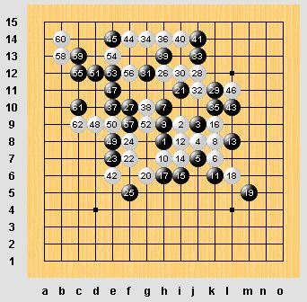

第12届世界连珠锦标赛QT第四轮<戴晓涵 黑胜>
#1 第12届世界连珠锦标赛QT第四轮<戴晓涵 黑胜> 作者：絕版賭徒 发表时间：2011-8-2 19:21:00
| Black: | Dai Xiaohan | ||
|
White: |
Kise Katsumi |
=======上图对应的爱五子棋谱代码如下，以便你拆解：========
h8h9j8g8g9i7h10i10f7i9i8j9k8l8l9k7j11i11i12k10j6m10l10m12l11f8m11j7l7j12g5e8d8d7e10e6c6f6h6e5e7g4f5d4c3f4e4h7g7i6j5i4i5h5f3d5g3d3d6f10m5j4h4f2i3h3m3l4m4m6m2m1k2k1n9k9k6m8k5l5k4k3l3
======================================================
［ gerbo 于 2011-8-2 19:25:53 时花20金币送鲜花一朵］
［ 梧桐风 于 2011-8-2 19:27:17 时花20金币送鲜花一朵］
［ 蓝天蓝 于 2011-8-2 19:28:06 时花20金币送鲜花一朵］
［ 白河愁 于 2011-8-2 19:33:24 时花20金币送鲜花一朵］
［ 被感动的人 于 2011-8-2 20:57:19 时奖励此帖[金币加 100 威望加1］
［ 华夏使者 于 2011-8-2 20:58:40 时花20金币送鲜花一朵］
［ 华夏使者 于 2011-8-2 20:58:46 时花20金币送鲜花一朵］
［ 华夏使者 于 2011-8-2 20:58:52 时花20金币送鲜花一朵］
［ 猪小姐 于 2011-8-2 22:24:30 时花20金币送鲜花一朵］
［此帖子已被 絕版賭徒 在 2011-8-2 22:56:54 编辑过］
［此帖子已被 絕版賭徒 在 2011-8-3 4:44:49 编辑过］
#2 Re:第12届世界连珠锦标赛QT第四轮 作者：珍惜你和我 发表时间：2011-8-2 19:40:05
对手越来越强，开始考验小天的实力了，小天加油
［ 絕版賭徒 于 2011-8-3 15:58:34 时花20金币送鲜花一朵］
#3 Re:第12届世界连珠锦标赛QT第四轮 作者：絕版賭徒 发表时间：2011-8-2 19:41:11
黑白有没有好的下法
#4 Re:第12届世界连珠锦标赛QT第四轮 作者：絕版賭徒 发表时间：2011-8-2 19:45:38
=======上图对应的爱五子棋谱代码如下，以便你拆解：========
h8h9j8g8g9i7h10i10f7i9i8
======================================================
#5 Re:第12届世界连珠锦标赛QT第四轮 作者：清缘 发表时间：2011-8-2 19:54:04
赌徒大师来给大家分析分析下局面的走势把#6 Re:第12届世界连珠锦标赛QT第四轮 作者：絕版賭徒 发表时间：2011-8-2 19:57:01
| Black: | Lin Huang-Yu | ||
White: | Sumarokov Evgeny |
=======上图对应的爱五子棋谱代码如下，以便你拆解：========
h8h9i10g10j7h11j8f9i12e9i9i8g7j10j6j5l6k7i6h6k8l9
======================================================
#7 Re:第12届世界连珠锦标赛QT第四轮 作者：清缘 发表时间：2011-8-2 19:58:34
6楼白棋中研究了#8 Re:第12届世界连珠锦标赛QT第四轮 作者：絕版賭徒 发表时间：2011-8-2 20:03:05
是呀。8必败了,中小优研究了#9 Re:第12届世界连珠锦标赛QT第四轮 作者：絕版賭徒 发表时间：2011-8-2 20:03:40
7就地毯了#10 Re:Re:第12届世界连珠锦标赛QT第四轮 作者：岑小鱼 发表时间：2011-8-2 20:05:45
=======上图对应的爱五子棋谱代码如下，以便你拆解：========
h8h9j8g8g9i7h10i10f7i9i8j9k8l8l9
======================================================
似乎很稳当..
#11 Re:第12届世界连珠锦标赛QT第四轮 作者：絕版賭徒 发表时间：2011-8-2 20:09:46
=======上图对应的爱五子棋谱代码如下，以便你拆解：========
h8h9i10g10j7g9i9
======================================================七唯一，后况不便说，等小天比完吧，这里有他的对手，呵呵，
=======上图对应的爱五子棋谱代码如下，以便你拆解：========
h8h9i10g10j7g9f9f8
======================================================这里8白必胜，
#12 Re:第12届世界连珠锦标赛QT第四轮 作者：絕版賭徒 发表时间：2011-8-2 20:12:45
=======上图对应的爱五子棋谱代码如下，以便你拆解：========
h8h9j8g8g9i7h10i10f7i9i8j9k8l8l9k7
======================================================目前下到这了
#13 Re:第12届世界连珠锦标赛QT第四轮 作者：絕版賭徒 发表时间：2011-8-2 20:17:54
林皇羽（小优 中国台北）胜出#14 Re:第12届世界连珠锦标赛QT第四轮 作者：絕版賭徒 发表时间：2011-8-2 20:21:49
=======上图对应的爱五子棋谱代码如下，以便你拆解：========
h8h9j8g8g9i7h10i10f7i9i8j9k8l8l9k7j11
======================================================
| Black: | Dai Xiaohan | ||
White: | Kise Katsumi |
#15 Re:第12届世界连珠锦标赛QT第四轮 作者：絕版賭徒 发表时间：2011-8-2 20:43:37
=======上图对应的爱五子棋谱代码如下，以便你拆解：========
h8h9j8g8g9i7h10i10f7i9i8j9k8l8l9k7j11i11
======================================================
#16 Re:第12届世界连珠锦标赛QT第四轮 作者：死劲哭 发表时间：2011-8-2 20:49:28
=======上图对应的爱五子棋谱代码如下，以便你拆解：========
h8h7f8g6g7i8f5h6i6f6e6e8g4h3h5f3g5e5g9f10j9i9i10k8h10i11e7d6j10k10
======================================================
#17 Re:第12届世界连珠锦标赛QT第四轮 作者：珍惜你和我 发表时间：2011-8-2 20:56:48
ants的那个对局，好像必胜没杀出来，必胜点没下对，ants持黑，martin持白
=======上图对应的爱五子棋谱代码如下，以便你拆解：========
h8h9j10i9g9i7k9l8i8g8h10i11i10k10f7e7e8d9f5h7f6f8i6f4
======================================================而黑石显示，第23手g4黑简单杀！这里ants是否漏杀了呢？

#18 Re:第12届世界连珠锦标赛QT第四轮 作者：絕版賭徒 发表时间：2011-8-2 21:00:56
=======上图对应的爱五子棋谱代码如下，以便你拆解：========
h8h9j10i9g9i7k9l8i8g8h10i11i10k10f7e7e8d9f5h7f6f8g6
======================================================复17楼，黑棋23在G6确实黑地毯
#19 Re:第12届世界连珠锦标赛QT第四轮 作者：絕版賭徒 发表时间：2011-8-2 21:02:51
=======上图对应的爱五子棋谱代码如下，以便你拆解：========
h8h9j8g8g9i7h10i10f7i9i8j9k8l8l9k7j11i11i12k10j6m10l10m12
======================================================
#20 Re:第12届世界连珠锦标赛QT第四轮 作者：絕版賭徒 发表时间：2011-8-2 21:06:04
=======上图对应的爱五子棋谱代码如下，以便你拆解：========
h8h9j8g8g9i7h10i10f7i9i8j9k8l8l9k7j11i11i12k10j6m10l10m12l11f8
======================================================
#21 Re:第12届世界连珠锦标赛QT第四轮 作者：死劲哭 发表时间：2011-8-2 21:06:05
他忘记把黑石镶嵌进脑子里面了
#22 Re:第12届世界连珠锦标赛QT第四轮 作者：絕版賭徒 发表时间：2011-8-2 21:17:37
=======上图对应的爱五子棋谱代码如下，以便你拆解：========
h8h9j8g8g9i7h10i10f7i9i8j9k8l8l9k7j11i11i12k10j6m10l10m12l11f8m11j7l7
======================================================
#23 Re:第12届世界连珠锦标赛QT第四轮 作者：隐藏菜系 发表时间：2011-8-2 21:25:46
ants那个23也可以必，但是25貌似又缓了#24 Re:第12届世界连珠锦标赛QT第四轮 作者：絕版賭徒 发表时间：2011-8-2 21:26:32
=======上图对应的爱五子棋谱代码如下，以便你拆解：========
h8h9j8g8g9i7h10i10f7i9i8j9k8l8l9k7j11i11i12k10j6m10l10m12l11f8m11j7l7j12g5e8
======================================================
#25 Re:第12届世界连珠锦标赛QT第四轮 作者：隐藏菜系 发表时间：2011-8-2 21:27:24
哦~ants仍然是必胜。。
#26 Re:第12届世界连珠锦标赛QT第四轮 作者：死劲哭 发表时间：2011-8-2 21:29:37
看赌徒老师这么辛苦，我来帮你更新一下其他桌的战况吧
=======上图对应的爱五子棋谱代码如下，以便你拆解：========
h8i9i7g9f8g8h9g10g11h10f10i12i11h11f9f7e9g7g6h12h13f11k10j9j12k8l7j6
======================================================
［ 絕版賭徒 于 2011-8-2 21:31:07 时花20金币送鲜花一朵］
#27 Re:第12届世界连珠锦标赛QT第四轮 作者：死劲哭 发表时间：2011-8-2 21:33:58
=======上图对应的爱五子棋谱代码如下，以便你拆解：========
h8i9j9j8j7k7h10k8h9h7k6i8l8i7i6k9h6l6m5g6i11f7e7f8f5h12f10j12k11i12g12j11j13g14k10h14
======================================================
#28 Re:第12届世界连珠锦标赛QT第四轮 作者：梧桐风 发表时间：2011-8-2 21:37:00
噢噢，记得写上其他都的对局者呀#29 Re:第12届世界连珠锦标赛QT第四轮 作者：珍惜你和我 发表时间：2011-8-2 21:37:02
小天的对局，貌似取胜也很艰难#30 Re:第12届世界连珠锦标赛QT第四轮 作者：死劲哭 发表时间：2011-8-2 21:40:14
=======上图对应的爱五子棋谱代码如下，以便你拆解：========
h8h7f6g7g8i7f7f8e6d5e9f5i8g5e5h6j8k8h9i10j7g10d6g6g3c7c6b6j5j6k6l5f9g9h10h12g11f12l7i4f4h2j4k7l9i12g12
======================================================
Chen Ko-Han
Hou l-Cheng
［此帖子已被 死劲哭 在 2011-8-2 21:43:05 编辑过］
#31 Re:第12届世界连珠锦标赛QT第四轮 作者：絕版賭徒 发表时间：2011-8-2 21:42:20
=======上图对应的爱五子棋谱代码如下，以便你拆解：========
h8h9j8g8g9i7h10i10f7i9i8j9k8l8l9k7j11i11i12k10j6m10l10m12l11f8m11j7l7j12g5e8d8d7
======================================================
| Black: | Dai Xiaohan | ||
White: | Kise Katsumi |
#32 Re:第12届世界连珠锦标赛QT第四轮 作者：絕版賭徒 发表时间：2011-8-2 21:54:58
=======上图对应的爱五子棋谱代码如下，以便你拆解：========
h8h9j8g8g9i7h10i10f7i9i8j9k8l8l9k7j11i11i12k10j6m10l10m12l11f8m11j7l7j12g5e8d8d7e10e6c6f6
======================================================
#33 Re:第12届世界连珠锦标赛QT第四轮 作者：珍惜你和我 发表时间：2011-8-2 22:01:00
小天开始展现八卦神功了，全盘控制！不过这个白下的很猛的，一直在攻，很强的一个棋手#34 Re:第12届世界连珠锦标赛QT第四轮 作者：梧桐风 发表时间：2011-8-2 22:12:35
看错了
［此帖子已被 梧桐风 在 2011-8-2 22:16:41 编辑过］
#35 Re:Re:第12届世界连珠锦标赛QT第四轮 作者：嵯峨 发表时间：2011-8-2 22:23:39
引用：
原文由 梧桐风 发表于 2011-8-2 22:12:35 :看错了
［此帖子已被 梧桐风 在 2011-8-2 22:16:41 编辑过］
 被你吓一跳。。。我刷新了半天没刷出来
被你吓一跳。。。我刷新了半天没刷出来
#36 Re:Re:Re:第12届世界连珠锦标赛QT第四轮 作者：猪小姐 发表时间：2011-8-2 22:24:17
引用：
原文由 嵯峨 发表于 2011-8-2 22:23:39 :引用：
原文由 梧桐风 发表于 2011-8-2 22:12:35 :看错了
［此帖子已被 梧桐风 在 2011-8-2 22:16:41 编辑过］
同上。。。。。。
#37 Re:第12届世界连珠锦标赛QT第四轮 作者：湛飞燕 发表时间：2011-8-2 22:25:08
白进攻很猛~~~
#38 Re:第12届世界连珠锦标赛QT第四轮 作者：珍惜你和我 发表时间：2011-8-2 22:30:56
这局到此，至少小天不会输了，但是想赢，还是有一定的难度#39 Re:Re:第12届世界连珠锦标赛QT第四轮 作者：死劲哭 发表时间：2011-8-2 22:34:09
我们看看另一桌的战况
［此帖子已被 死劲哭 在 2011-8-2 22:37:46 编辑过］
#40 Re:第12届世界连珠锦标赛QT第四轮 作者：第五象限 发表时间：2011-8-2 22:40:06
小天赢了！#41 Re:第12届世界连珠锦标赛QT第四轮 作者：死劲哭 发表时间：2011-8-2 22:42:31
那是必须的
#42 Re:第12届世界连珠锦标赛QT第四轮 作者：蓝天蓝 发表时间：2011-8-2 22:43:19
恭喜小天老师#43 Re:第12届世界连珠锦标赛QT第四轮 作者：卯寻月 发表时间：2011-8-2 22:45:15
小天啊~~~
#44 Re:第12届世界连珠锦标赛QT第四轮 作者：炫飞冰弦 发表时间：2011-8-2 22:45:18
#45 Re:第12届世界连珠锦标赛QT第四轮 作者：小丸.net 发表时间：2011-8-2 22:45:38
从头到尾白一直在攻，没有给黑机会，最后忽略了一个五手的VCF......
#46 Re:第12届世界连珠锦标赛QT第四轮 作者：嵯峨 发表时间：2011-8-2 22:45:47
=======上图对应的爱五子棋谱代码如下，以便你拆解：========
h8h9j8g8g9i7h10i10f7i9i8j9k8l8l9k7j11i11i12k10j6m10l10m12l11f8m11j7l7j12g5e8d8d7e10e6c6f6h6e5e7g4f5d4c3f4e4h7g7i6j5i4i5h5f3d5g3d3d6f10m5j4h4f2i3h3m3l4m4m6m2m1k2k1n9k9k6m8k5l5k4k3l3
======================================================
#47 Re:第12届世界连珠锦标赛QT第四轮 作者：卯寻月 发表时间：2011-8-2 22:46:51
看双方时间，最后相当于下快棋啊~~［此帖子已被 卯寻月 在 2011-8-2 22:48:39 编辑过］
#48 Re:第12届世界连珠锦标赛QT第四轮 作者：珍惜你和我 发表时间：2011-8-2 22:47:05
小天真的不容易，终于艰难取胜，强大的计算力啊，很长的vct，这局下的太吃力了，还好终于赢了，这局真的小天的实力体现无遗啊！小天终于慢慢的恢复状态了，加油
#49 Re:第12届世界连珠锦标赛QT第四轮 作者：絕版賭徒 发表时间：2011-8-2 22:48:04
［此帖子已被 絕版賭徒 在 2011-8-2 22:49:29 编辑过］
#50 Re:第12届世界连珠锦标赛QT第四轮 作者：杨文浩 发表时间：2011-8-2 22:48:33
预祝小天老师下一轮再下一成！
#51 Re:第12届世界连珠锦标赛QT第四轮 作者：死劲哭 发表时间：2011-8-2 22:49:50
早说过了，输的那局是策略。不存在恢复之说#52 Re:第12届世界连珠锦标赛QT第四轮 作者：珍惜你和我 发表时间：2011-8-2 22:50:14
哇塞，这个杀很长啊，难度很大啊，小天，我的神啊
#53 Re:第12届世界连珠锦标赛QT第四轮 作者：岑小鱼 发表时间：2011-8-2 22:51:03
后面下的快黑算清楚了..而白没有选择了..
不过前面66手先反一手再找防可以挣扎吧?
#54 Re:第12届世界连珠锦标赛QT第四轮 作者：梧桐风 发表时间：2011-8-2 22:51:23
 什么叫展现出强大的实力
什么叫展现出强大的实力
#55 Re:第12届世界连珠锦标赛QT第四轮 作者：絕版賭徒 发表时间：2011-8-2 22:51:42
=======上图对应的爱五子棋谱代码如下，以便你拆解：========
h8h9j8g8g9i7h10i10f7i9i8j9k8l8l9k7j11i11i12k10j6m10l10m12l11f8m11j7l7j12g5e8d8d7e10e6c6f6h6e5e7d4c3e4
======================================================这是棋情拆的,白的机会,可惜他没这么,应该是时间问题
#56 Re:第12届世界连珠锦标赛QT第四轮 作者：死劲哭 发表时间：2011-8-2 22:53:28
嘘！ 当心间谍进入！坏了好事
#57 Re:第12届世界连珠锦标赛QT第四轮 作者：珍惜你和我 发表时间：2011-8-2 22:53:49
小天的体质不好啊，这局下的那么艰难，估计体力也消耗的差不多了吧，幸亏早上那局轻松必胜秒杀对手，保存好体力！下午才下得出那么精彩的胜利，小天赶紧回去休息好，保养好体力，明天再战
#58 Re:第12届世界连珠锦标赛QT第四轮 作者：第五象限 发表时间：2011-8-2 22:55:30
感觉白棋一直不太好下 局面还是一直被黑棋掌控的 中盘无奈的交换又使得黑左上右下都可攻 60防在左上后 小天老师的做棋还是很犀利的 加油！#59 Re:Re:第12届世界连珠锦标赛QT第四轮 作者：卯寻月 发表时间：2011-8-2 22:56:59
一会还有一轮的~~~引用：
原文由 珍惜你和我 发表于 2011-8-2 22:53:49 :
小天的体质不好啊，这局下的那么艰难，估计体力也消耗的差不多了吧，幸亏早上那局轻松必胜秒杀对手，保存好体力！下午才下得出那么精彩的胜利
#60 Re:第12届世界连珠锦标赛QT第四轮<戴晓涵 黑胜> 作者：第五象限 发表时间：2011-8-2 22:58:25
有四轮全胜的么？现在积分情况怎么样？#61 Re:第12届世界连珠锦标赛QT第四轮<戴晓涵 黑胜> 作者：猪小姐 发表时间：2011-8-2 22:58:44
今天三轮啊。。。。。。悲催了。。。。。。
等明早起来看结果好了。。。。。。
#62 Re:第12届世界连珠锦标赛QT第四轮<戴晓涵 黑胜> 作者：死劲哭 发表时间：2011-8-2 23:01:33
开心、紧张、快乐的一天
#63 Re:第12届世界连珠锦标赛QT第四轮<戴晓涵 黑胜> 作者：杨文浩 发表时间：2011-8-2 23:06:34
今天的第三轮是北京时间啥时候？？RENJU.NET上会播吗？？#64 Re:第12届世界连珠锦标赛QT第四轮<戴晓涵 黑胜> 作者：梧桐风 发表时间：2011-8-2 23:08:16
肯定会播，晚上通宵的楼下报道啊#65 Re:Re:第12届世界连珠锦标赛QT第四轮<戴晓涵 黑胜> 作者：猪小姐 发表时间：2011-8-2 23:08:46
引用：
原文由 杨文浩 发表于 2011-8-2 23:06:34 :
今天的第三轮是北京时间啥时候？？RENJU.NET上会播吗？？
现在瑞典是下午五点多。第三轮至少还得等两个小时吧。。。。。。
#66 Re:第12届世界连珠锦标赛QT第四轮<戴晓涵 黑胜> 作者：死劲哭 发表时间：2011-8-2 23:10:03
瑞典与北京时差是7小时 （ 晚北京时间7小时） 我们现在是23：09 那里是16：09#67 Re:Re:第12届世界连珠锦标赛QT第四轮<戴晓涵 黑胜> 作者：猪小姐 发表时间：2011-8-2 23:11:40
引用：
原文由 死劲哭 发表于 2011-8-2 23:10:03 :
瑞典与北京时差是7小时 （ 晚北京时间7小时） 我们现在是23：09 那里是16：09
现在采用的是夏令时谢谢。
#68 Re:Re:第12届世界连珠锦标赛QT第四轮<戴晓涵 黑胜> 作者：猪小姐 发表时间：2011-8-2 23:12:34
引用：
原文由 梧桐风 发表于 2011-8-2 23:08:16 :
肯定会播，晚上通宵的楼下报道啊
楼下。。。。。。
坑我啊。。。。。。 我明天还得上一整天的课嘞。。。。。。
我明天还得上一整天的课嘞。。。。。。
#69 Re:第12届世界连珠锦标赛QT第四轮<戴晓涵 黑胜> 作者：第五象限 发表时间：2011-8-2 23:12:54
6个小时时差吧（夏令时）#70 Re:第12届世界连珠锦标赛QT第四轮<戴晓涵 黑胜> 作者：卯寻月 发表时间：2011-8-2 23:14:01
是六小时，下一轮应该是北京时间24：00开始#71 Re:第12届世界连珠锦标赛QT第四轮<戴晓涵 黑胜> 作者：絕版賭徒 发表时间：2011-8-2 23:14:39
差6小时整,昨天问了下时差,,,,,听说晚上22点还有太阳,早上4点太阳就升起了#72 Re:Re:Re:第12届世界连珠锦标赛QT第四轮<戴晓涵 黑胜> 作者：死劲哭 发表时间：2011-8-2 23:15:22
引用：是的，您纠正得完全正确谢谢
原文由 猪小姐 发表于 2011-8-2 23:11:40 :现在采用的是夏令时谢谢。
#73 Re:第12届世界连珠锦标赛QT第四轮<戴晓涵 黑胜> 作者：珍惜你和我 发表时间：2011-8-2 23:16:49
还有一轮啊，我靠啊，小天那体质受得了么，千万要挺住啊
#74 Re:第12届世界连珠锦标赛QT第四轮<戴晓涵 黑胜> 作者：死劲哭 发表时间：2011-8-2 23:18:12
瑞典东1区，中国东八区 时差7小时#75 Re:第12届世界连珠锦标赛QT第四轮<戴晓涵 黑胜> 作者：死劲哭 发表时间：2011-8-2 23:18:59
夏令时减1小时#76 Re:第12届世界连珠锦标赛QT第四轮<戴晓涵 黑胜> 作者：第五象限 发表时间：2011-8-2 23:19:33
这么快就比下一轮了。。休息时间有点短啊 保和争胜吧。。#77 Re:Re:第12届世界连珠锦标赛QT第四轮<戴晓涵 黑胜> 作者：非黑既白 发表时间：2011-8-7 20:30:58
小天老师，我们支持你